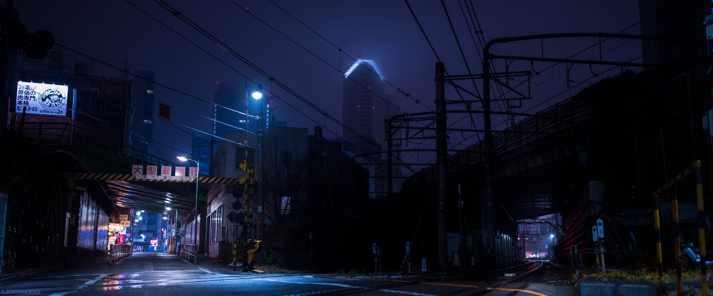

Tokyo After Hours
Liam Wong’s photographs are deeply influenced by the visual identities of video games, utilising vibrant colours, open landscapes and cyberpunk imagery.


Liam Wong’s photographs are deeply influenced by the visual identities of video games, utilising vibrant colours, open landscapes and cyberpunk imagery.

Through creative direction, set design and visual storytelling, Daphne Westland explores the boundaries between surrealism and the everyday.